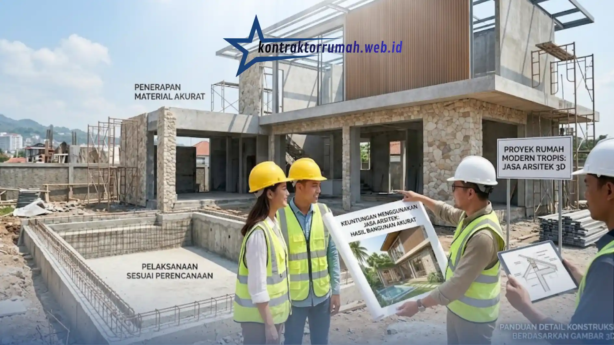

Pernahkah Anda membayangkan desain rumah di kepala, tetapi setelah selesai dibangun ternyata hasilnya jauh dari ekspektasi? Ruangan terasa lebih sempit, warna cat ternyata tidak cocok dengan warna lantai, dan cahaya matahari tidak masuk secara optimal.
Poin Penting
- Gambar 3D memungkinkan virtual tour rumah sebelum pembangunan fisik dimulai.
- Revisi desain dilakukan di layar, jauh lebih murah & cepat dibanding membongkar dinding terbangun.
- Simulasi tekstur & warna material membantu menghindari risiko salah beli bahan bangunan.
- Render 3D jadi panduan visual bersama tukang, meminimalisir miskomunikasi & pekerjaan ulang.
- Biaya jasa 3D jauh lebih murah dibanding biaya bongkar-pasang akibat kesalahan konstruksi.
Membangun rumah tanpa visualisasi yang jelas ibarat merakit puzzle rumit tanpa melihat gambar pada kotaknya. Di sinilah peran krusial jasa arsitek yang dilengkapi dengan teknologi desain 3D (Tiga Dimensi). Berinvestasi pada gambar 3D bukan sekadar gaya-gayaan, melainkan strategi cerdas yang memberikan sejumlah keuntungan berikut ini.
Melihat Hasil Akhir Sebelum Batu Bata Disusun
Gambar 3D memungkinkan Anda melakukan virtual tour ke dalam rumah masa depan Anda, jauh sebelum proses pembangunan fisik dimulai.
Mengecek Proporsi dan Pencahayaan secara Akurat
Anda bisa melihat proporsi ruangan, tinggi plafon, hingga bagaimana bayangan cahaya matahari jatuh ke ruang tamu pada sore hari. Simulasi pencahayaan ini penting untuk memastikan ruangan tidak terasa pengap atau justru terlalu silau di jam-jam tertentu.
Revisi di Layar, Bukan di Lapangan
Jika ada yang kurang pas, misalnya posisi jendela atau ukuran kamar yang terasa sempit, revisi dilakukan di layar komputer. Ini jauh lebih murah dan cepat dibandingkan harus membongkar dinding yang sudah terlanjur dibangun.
Eksplorasi Material Tanpa Risiko Salah Beli
Ragu apakah dinding batu alam cocok dipadukan dengan lantai parket kayu? Atau bingung menentukan warna cat yang pas dengan warna atap? Gambar 3D menjawab keraguan ini sebelum Anda mengeluarkan uang sepeser pun.
Simulasi Tekstur dan Warna secara Realistis
Arsitek bisa langsung mengaplikasikan tekstur dan warna material tersebut pada gambar 3D, lengkap dengan efek pencahayaan yang mendekati kondisi asli. Anda bisa melihat perpaduan estetikanya secara realistis sebelum mengeluarkan uang jutaan rupiah untuk membeli bahan.

Pembangunan yang mengikuti gambar desain 3D memastikan hasil akhir rumah sesuai dengan visualisasi yang sudah disepakati sejak awal.
Bandingkan Beberapa Opsi Sekaligus
Salah satu kelebihan lain dari proses ini adalah kemampuan membandingkan dua atau tiga pilihan material dalam gambar yang berbeda, sehingga keputusan akhir bisa diambil berdasarkan perbandingan visual langsung, bukan sekadar membayangkan dari katalog.
Panduan Anti-Meleset untuk Tukang
Gambar 2D atau denah terkadang sulit diterjemahkan oleh tukang bangunan, terutama untuk detail yang tidak terbiasa mereka kerjakan.
Render 3D sebagai Bahasa Visual Bersama
Dengan adanya render 3D, pihak kontraktor dan tukang memiliki panduan visual yang sangat jelas tentang bentuk akhir yang harus dicapai, mulai dari sudut kemiringan atap hingga detail list plafon. Panduan ini meminimalisir miskomunikasi di lapangan yang sering menjadi penyebab pekerjaan harus diulang.
Mengurangi Selisih Persepsi Antara Pemilik dan Pelaksana
Tanpa gambar 3D, pemilik rumah dan tukang bisa membayangkan hasil akhir yang berbeda meski membaca denah yang sama. Visualisasi tiga dimensi menyamakan persepsi kedua belah pihak sejak sebelum proyek dimulai.
Efisiensi Waktu dan Anggaran yang Signifikan
Kesalahan di lapangan adalah musuh utama pembengkakan biaya dalam proyek pembangunan rumah.
Biaya Jasa 3D Jauh Lebih Murah dari Biaya Bongkar-Pasang
Membongkar tembok yang salah bangun jauh lebih mahal daripada biaya jasa arsitek pembuat gambar 3D. Selain biaya material yang terbuang, ada juga biaya upah tukang tambahan dan waktu proyek yang molor akibat pekerjaan ulang.
Perencanaan Matang Menjaga Proyek Sesuai Tenggat Waktu
Perencanaan visual yang matang memastikan setiap tahapan pembangunan berjalan sesuai urutan yang sudah direncanakan, sehingga proyek lebih mungkin selesai tepat waktu tanpa hambatan revisi mendadak di tengah jalan.
Catatan dari tim Kontraktor Rumah: Berinvestasi pada jasa arsitek dan desain 3D di awal proyek adalah langkah terbaik untuk menyelamatkan Anda dari stres, kerugian finansial, dan penyesalan di kemudian hari. Dengan visualisasi yang jelas, Anda bisa membangun rumah impian dengan keyakinan penuh, bukan sekadar berharap hasilnya sesuai bayangan.
FAQ Seputar Jasa Arsitek Rumah untuk Gambar 3D
Ingin melihat rumah impian Anda dalam bentuk visual 3D sebelum proses pembangunan dimulai? Konsultasikan kebutuhan desain rumah Anda bersama tim arsitek kami sekarang.